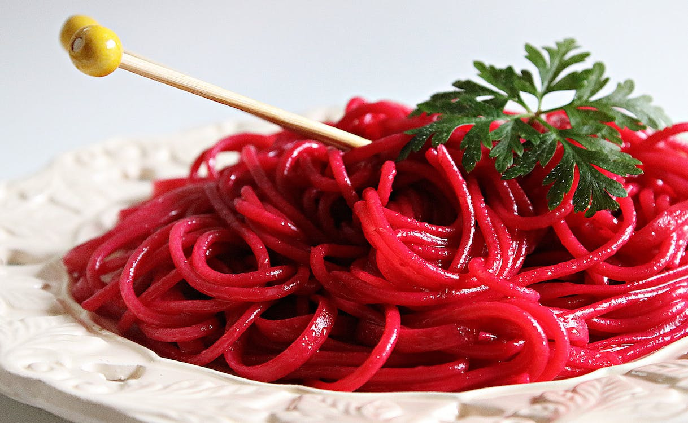

Bucatini rojos con oliva
Esta especialidad de la cocina italiana combina la suavidad y textura única de los bucatini con una salsa roja de tomate rica y sabrosa, realzada con el sabor distintivo de las olivas.
Esta especialidad de la cocina italiana combina la suavidad y textura única de los bucatini con una salsa roja de tomate rica y sabrosa, realzada con el sabor distintivo de las olivas.
Deliciosa pizza clásica de origen italiano que combina una base de masa crujiente con tomate fresco, queso mozzarella y hojas de albahaca. Su sabor simple y equilibrado hace de la Margarita una opción popular y satisfactoria para los amantes de la pizza tradicional.

Cada bocado de nuestros Gnocchi con Nuez y Brócoli te sorprenderá con la suavidad de los gnocchi y la frescura del brócoli. La salsa cremosa de nuez añade una capa adicional de sabor y una textura crujiente gracias a los trozos de nueces tostadas. Es una combinación equilibrada que deleitará tus sentidos y te dejará satisfecho.

Los Agnolotis con Salsa Roja son perfectos para aquellos que buscan una comida reconfortante y llena de sabores auténticos. Ven y disfruta de esta combinación irresistible de pasta y salsa en cada bocado.
Cada capa se complementa con ingredientes como queso ricotta, queso mozzarella y especias, creando un plato gratinado y lleno de sabor. La lasaña es conocida por su textura suave y reconfortante, convirtiéndola en una opción popular en todo el mundo para disfrutar de un festín de pasta